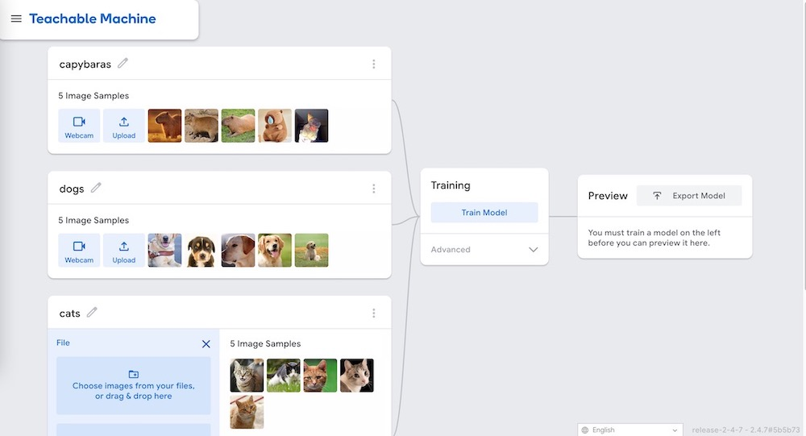

The project focuses on creating teachable machines capable of recognizing and classifying images of capybaras, cats, and dogs. Using supervised learning models, we aim to develop a robust and inclusive image recognition system. Our work is inspired by Joy Buolamwini's Unmasking AI: My Mission to Protect What Is Human in a World of Machines, which emphasizes the ethical, societal, and moral dimensions of artificial intelligence development. This project not only addresses technical objectives like accuracy and efficiency but also embraces the broader goal of embedding fairness, transparency, and inclusivity into the AI development process. Buolamwini’s insights serve as a guiding framework, encouraging us to interrogate biases in data and design choices while aiming to build a system that uplifts rather than marginalizes.
1. The Coded Gaze: Recognizing Bias in AI
Joy Buolamwini’s concept of the "coded gaze" encapsulates how AI systems reflect the biases of their creators and the datasets on which they are trained. In Unmasking AI, she describes her pivotal experience with facial recognition software that failed to detect her face unless she wore a white mask, highlighting how data imbalances can lead to discriminatory outcomes.
For our teachable machine, this principle guided every step of the project. The dataset for capybaras, cats, and dogs was audited to uncover potential biases. For instance:
Capybara images predominantly depicted natural environments, raising concerns about misclassification in urban settings.
Black-coated animals (both cats and dogs) were underrepresented, leading to lower accuracy in their classification due to lighting challenges.
We actively worked to mitigate these biases by sourcing additional images and applying data augmentation techniques. Buolamwini’s insights remind us that recognizing bias is the first step toward addressing it, pushing us to question not just our data but also the assumptions underlying our models.
2. Who Shapes AI? Power Dynamics and Representation
A central argument in Unmasking AI is that AI systems are not neutral—they are shaped by the priorities, values, and assumptions of their creators and the institutions behind them. Buolamwini emphasizes the importance of diverse perspectives in AI development to prevent reinforcing existing power imbalances.
Our team embraced this lesson by prioritizing diversity in every aspect of the project. We sought input from peers and professionals with varied cultural, educational, and professional backgrounds. This collaborative approach helped identify blind spots in our system, such as breed-specific biases in dog classification or assumptions about capybaras’ typical environments.
By decentralizing decision-making and incorporating a range of voices, we aimed to develop a teachable machine that reflects a broader spectrum of experiences. However, as Buolamwini cautions, achieving true inclusivity is an ongoing process that requires vigilance and commitment.
3. Transparency as Accountability
In Unmasking AI, Buolamwini critiques the opacity of many AI systems, which often function as “black boxes” inaccessible to the public. She argues that transparency is essential for accountability, especially when AI systems have the potential to perpetuate harm.
A user-friendly interface was developed, allowing users to test the teachable machine and view its confidence levels for each classification.
Transparency fosters trust, but it also highlights limitations. We openly shared instances where the model struggled, such as distinguishing between similarly colored capybaras and dogs in low-resolution images. Inspired by Buolamwini, we view transparency not as a vulnerability but as a strength that invites collaboration and improvement.
4. Intersectionality in AI Design
Buolamwini draws on Kimberlé Crenshaw’s concept of intersectionality to examine how overlapping systems of oppression, such as racism, sexism, and classism, are often encoded into AI systems. She warns that failing to account for these intersections can exacerbate inequalities.
Guided by this insight, we tested our teachable machine across multiple dimensions, such as:
How well it classified images of animals in diverse lighting conditions.
Whether performance varied based on breed, size, or coat type.
How the system handled ambiguous or mixed-background images.
One significant finding was that images of darker-coated animals performed worse, a disparity that could have perpetuated bias in real-world applications. By addressing these disparities during development, we aimed to create a model that works equitably across different contexts. However, Buolamwini’s work reminds us that this is a continuous process, requiring regular audits as societal and technological landscapes evolve.
5. Toward Algorithmic Justice
In Unmasking AI, Buolamwini advocates for algorithmic justice—a call to design AI systems that not only avoid harm but actively promote equity. She emphasizes that fairness should be integral to AI development, not an afterthought.
Our teachable machine reflects this ethos by serving as both a functional tool and an educational resource. Beyond training a model to classify images, we designed the system to highlight the ethical challenges of AI:
The interface encourages users to report errors or suggest improvements, fostering an iterative and inclusive development process.
Algorithmic justice is not just about fixing biases—it’s about reimagining AI as a tool for social good. This project aims to contribute to that vision, inspired by Buolamwini’s belief that ethical AI requires humility, vigilance, and a commitment to amplifying marginalized voices.
Conclusion：
Joy Buolamwini’s Unmasking AI provides a powerful framework for ethical AI development. By embedding its principles—recognizing bias, fostering inclusivity, prioritizing transparency, embracing intersectionality, and pursuing algorithmic justice—into our teachable machine project, we sought to go beyond technical excellence and contribute to the broader conversation about AI’s societal impact.
The project serves as a reminder that AI development is a moral endeavor, not just a technical challenge. As Buolamwini asserts, “AI systems are mirrors of power.” Our work reflects a commitment to challenging that power, ensuring that AI systems uplift rather than marginalize. This is a small but meaningful step toward a future where technology serves humanity equitably and ethically.
1. Dataset Creation and Curation
The foundation of any teachable machine lies in the dataset. For this project, we collected a diverse range of images representing capybaras, cats, and dogs. Special care was taken to ensure demographic diversity among images to reflect various environmental, geographic, and cultural contexts. For instance:
Capybaras: Images were sourced from both natural habitats (South America) and urban interactions, capturing diverse lighting conditions, angles, and contexts.
Cats and Dogs: Photos covered different breeds, ages, and physical conditions to account for the vast variety in appearance.
Buolamwini’s concept of “the coded gaze” — a reflection of the biases of AI developers and datasets — inspired us to audit our dataset critically. We questioned whether certain groups, environments, or conditions might be underrepresented, ensuring that the data did not unintentionally favor specific breeds, sizes, or contexts.
2. Model Development and Training
We utilized supervised learning techniques, training models on labeled images of capybaras, cats, and dogs. A fourth “neutral” class was included for images that do not belong to any of the target categories. This neutral class was inspired by Buolamwini’s argument that AI systems must account for ambiguity to prevent erroneous or harmful classifications.
Techniques used:
Preprocessing: Images were resized, normalized, and augmented to ensure robust training across variations in lighting, angle, and resolution.